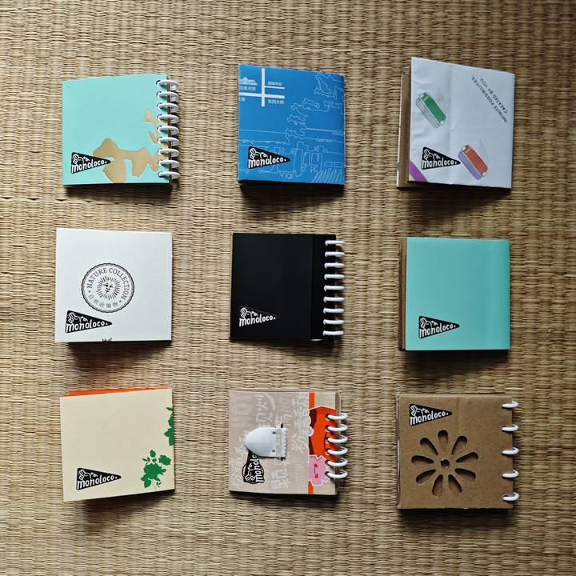
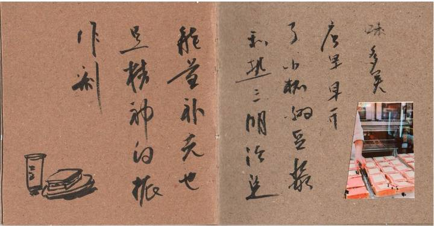
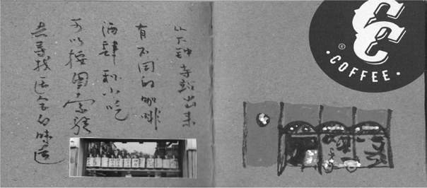
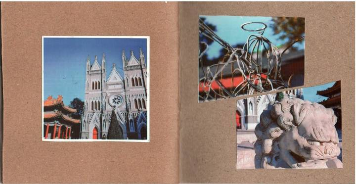
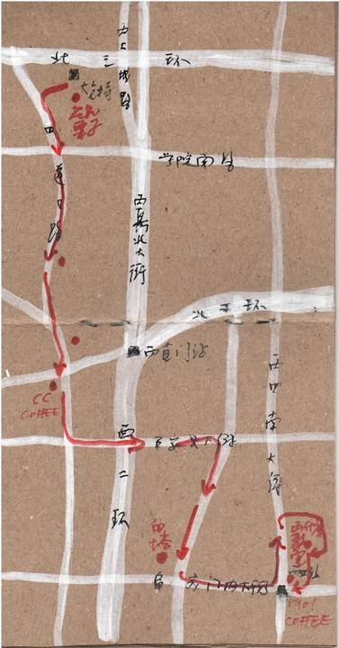
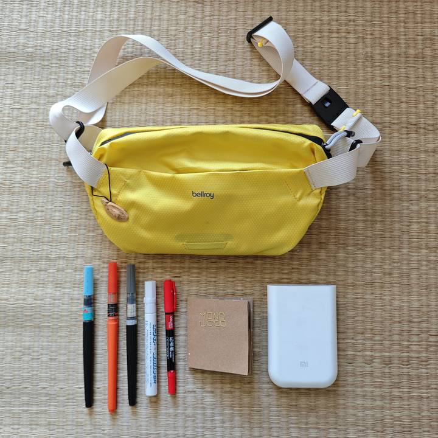

Bookbinding Workshop。
Make a notebook. Make it yours.
Give saved wrapping paper and other everyday materials a second life. Turn loose sheets into a small notebook, ready for your photographs, sketches and notes.


Start with what you have
Look for paper and packaging you would like to use again. Choose a cover and gather pages for a notebook you can take anywhere.
Put the pages together
Try a stitched, ring-bound or accordion book. We’ll announce the binding method and materials for each session in advance.
Make the first mark
A photograph, a line on a map, a few words: start anywhere. You don’t need to be able to draw to keep a notebook.
First, make a book.
Stitch the pages, bind them with rings or fold them into an accordion. These original diagrams show three ways to make a book. We’ll announce the structure and materials for each workshop in advance.


What will you fill it with?
It started with wrapping paper saved by a friend: small sheets, a cover made from whatever was to hand, and a notebook light enough to carry everywhere. Fill it as you go—with sketches, photographs, tickets or a few words. Over time, the pages become a collection of places, people and things you might otherwise forget.








Pack light. Bring a notebook.
A small bag, a few pens, a notebook and whatever else you like to use. That’s enough to get started. Take them out for a walk and see what catches your eye.

Join us next time.
We’re planning our workshops now. We’ll share dates, venues, materials and booking details as soon as each session is confirmed.
Interested in hosting a workshop at your venue or as part of a community event? We’d love to hear from you.
Host a workshop